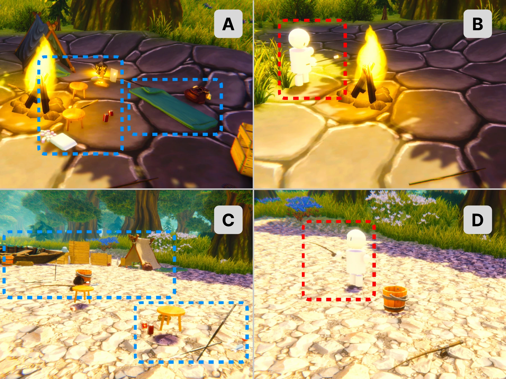

Virtual reality · Human–AI interaction
Social Cues for Stress Recovery in VR
A study of how different forms of social presence in a virtual environment relate to stress recovery and individual differences.
Research Lead · Advisor: Yucheng Jin
Accepted · Awaiting publication
Project at a glance
Focus
How do traces of human activity and a responsive AI companion shape a restorative VR experience?
My contribution
Study design, Unity development, embodied AI integration, and a within-subjects experiment.
Project form
Experimental research · Accepted, awaiting publication